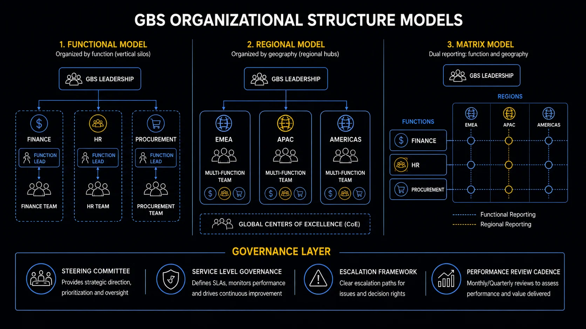

Organizational Structure and Governance Who owns it, who runs it, and why it matters to you.
Most GBS professionals experience governance as a set of rules that appear when something goes wrong. Understanding the structure behind it — before something goes wrong — changes how you read the organization around you.
Sound familiar?
 RYour org chart changed again and nobody explained why.T1 →
RYour org chart changed again and nobody explained why.T1 →
 PYou cannot say who GBS actually answers to.T2 →
PYou cannot say who GBS actually answers to.T2 →
 ATwo bosses, two priorities, one you.T3 →
ATwo bosses, two priorities, one you.T3 →
 K"Governance" gets said in every meeting. You nod along.T4 →
K"Governance" gets said in every meeting. You nod along.T4 →
 PThe structure looks fine on paper. The work says otherwise.T5 →
PThe structure looks fine on paper. The work says otherwise.T5 →
 PRules that worked last year now slow everything down.T6 →
PRules that worked last year now slow everything down.T6 →
GBS does not exist in one fixed form — it evolves
GBS structures follow a maturity curve — Stage 1 fragmented to Stage 4 integrated. Your center’s stage explains its rules. The model is in THE FIX.
Same company. New org chart.
Again.
RSecond reorg in one year. New reporting line, new team name.
A colleague sighs: "management chaos."
Ravi wonders if something is actually wrong with the center.
"Is this normal — or are we failing?"
He feels unsettled.
You read restructuring as chaos. Often it is a center moving up a curve.
GBS is not one fixed form. It evolves in stages — and each stage has its own structure.
Ravi places his center at Stage 2. The reorg stops looking random — it looks like the next stage arriving.
The maturity curve in depth — all four stages
The structure and governance of your GBS depends heavily on where it sits on the maturity curve. The same word — GBS — means very different things at Stage 1 versus Stage 4.
Getting started
Piecemeal efforts. One function or one country. Focused entirely on cost reduction and getting basic processes working.
- Finance-led, narrowly scoped
- Governance is informal — decisions made ad hoc
- Surviving the first audit is the real objective
- Most new joiners work here without knowing it
Consolidating scope
Multi-function, multi-region. Formal governance structures starting to appear. Still heavily cost-pressure driven.
- GBS leadership layer established
- SLAs and KPIs formalized
- Tension between efficiency and service quality intensifies
- Where most organizations operate today
Value creation mode
End-to-end process ownership. Data and analytics used to drive decisions. GBS moves from cost center to strategic partner.
- Governance becomes outcome-based, not just compliance-based
- Business partnering is real — not a title
- Continuous improvement is structured, not reactive
Enterprise capability center
GBS challenges and eliminates processes rather than running them. Operates like a business, not a support function.
- AI and automation embedded into service design
- Governance model is enterprise-wide, outcome-linked
- Best-in-class organizations — still rare
Place your center on the four stages. The stage explains this year’s changes.
Stages explain the shape. Ownership explains the priorities.

Functional, Regional, and Matrix — three GBS organizational models with governance layer
Who actually owns GBSGlobal Business Services — centralized, multi-function internal service delivery organization operating across regions?
GBS ownership follows the journey: finance-led, operations-led, or CEO-level. Where it reports shapes what it prioritizes. The model is in THE FIX.
Who does GBS answer to?
Depends where it was born.
PA stakeholder asks Peter who GBS reports to.
He starts answering — and stops.
Finance? Operations? Group?
"I honestly do not know who owns us."
He runs a team here and cannot answer. He feels embarrassed.
You cannot influence a center whose owner you cannot name.
There is no single answer — there are three common patterns, and each explains a different set of priorities.
Peter traces the line: finance-led. The cost obsession suddenly makes sense — and so does what a winning proposal needs to say.
Ownership patterns in depth
There is no single answer. Ownership depends on where the GBS journey started — and how mature the organization has become. Three common patterns.
- Most common starting point — GBS typically began as a finance cost-reduction initiative
- CFO or Group Finance Director holds accountability
- Works well when scope is primarily F&A
- Creates tension as HR, IT, Procurement join the scope
- Other functions may feel GBS serves finance first
- Ownership shared across C-level stakeholders by process cycle
- GBS site leadership maintains consistency — HR, hiring, career, culture, salary
- More common in mature, multi-function organizations
- Requires strong coordination between functional owners and GBS management
- Slower decisions — but broader buy-in
- GBS positioned as an enterprise strategic asset, not a function
- Most common at Stage 3–4 maturity
- GBS leadership team reports directly to CEO or COO
- Signals that GBS is a transformation engine, not a cost center
- Still rare — typically found in purpose-built global organizations
- Site-level consistency — regardless of who owns the process, the GBS site needs one team managing hiring standards, salary bands, career frameworks, training, and culture
- Specialization, not span of control — a Supply Chain Director can own global order-to-delivery and lead a large team, but the center is strongest when one local team runs hiring, payroll, and career development for the 1,500 people on site in Bangalore. That leader owns the function and is also a service recipient of the GBS site.
- The GBS leadership layer is the glue — it translates functional demands into operational reality without the center fragmenting into siloed mini-organizations
- In practice: you will have a functional manager (for your process) and a GBS manager (for your employment). Sometimes the same person. Often not.
Trace your center’s reporting line to the top. Note which function owns it.
That is the top of the house. On the floor, two lines pull at you directly.
The two-axis relationship — and why it creates pressure
You report solid-line to site leadership and dotted-line to a function owner. The pull between them is structural, not personal. The model is in THE FIX.
Two leaders. Two priorities.
One you.
ASite leadership wants overtime capped this month.
Amara’s process owner wants the backlog cleared this week.
Both are right. Both are her boss — sort of.
"Whose instruction wins?"
She feels squeezed from two directions that never talk to each other.
You take the two-boss pull personally. It is built into the structure.
The two lines have names — and knowing them turns confusion into a navigable map.
Amara names the axes in her next 1:1 and asks how conflicts get decided. The answer exists — she had just never asked.
The two-axis relationship in depth — with diagram
GBS exists between two forces that pull in different directions. Every professional on the floor feels this. Few can name it clearly.
Efficiency and cost pressure
The GBS exists to reduce costs. Leadership above expects efficiency gains of 5–20% per year depending on maturity and contractual commitments. This pressure sits primarily with the GBS leadership team — but it flows downward.
- Fewer FTEs absorbing the same or growing volume — the "short bench"
- Attrition creates short-term backlogs and service disruption
- Budget cycles drive headcount freezes at exactly the wrong moments
- Leadership wants decreasing cost and stable service — simultaneously
Stakeholder satisfaction
The business units being served expect reliable, responsive, high-quality service. This expectation affects almost everyone on the floor — not just leadership. Your daily work is shaped by it.
- SLA compliance is visible and tracked — misses are noticed
- Business stakeholders compare GBS to external alternatives
- Relationships with the local organization affect how flexible the service expectation actually is
- Service quality pressure intensifies when the bench is short
Each efficiency gain feeds the next problem:
- Efficiency demands a shorter bench.
- A shorter bench raises attrition risk.
- Attrition creates backlogs.
- Backlogs damage service quality.
- Poor quality triggers escalations that cost more than the efficiency saved.
Not a failure of GBS — it is the structural tension every professional works inside. Reading it helps you understand why certain decisions get made.
- The ambiguity in the upward relationship is structural, not accidental. GBS leadership is being asked to satisfy two principals at once — the business that owns the cost and the business that receives the service. When those two principals disagree, GBS leadership absorbs the friction. You will see this play out in headcount decisions, service scope discussions, and SLA negotiations.
- Attrition is the single biggest operational risk most GBS organizations underestimate. A center running at 85% capacity with high turnover is not a talent problem — it is a governance problem. The decision to run lean created the fragility. The talent team is dealing with the consequences of a structural choice made above their level.
- If you are early in your career, understand both axes. Your manager is managing upward pressure on cost and sideways pressure on service quality at the same time. Most of their decisions make more sense when you understand which pressure they are responding to.
Functional — vertical silos
Regional — geographic hubs
Matrix — function + geography
Draw your two lines: who owns your employment, who owns your targets. Ask how conflicts get resolved.
Two axes need rules. That is what governance actually is.
What governanceGovernance — the framework of standards, decision rights, controls, and accountability structures through which a GBS organization is managed and held accountable actually means on the ground
Governance is decision rights in action — who decides what, at which level. Learn it before proposing anything. The model is in THE FIX.
Everyone says "governance."
Nobody shows you what it is.
 K
KKlaudia drafts a small process change. Solid case.
It dies in a forum she had never heard of.
"That needs to go through the change board first."
A board she could not have named. She feels blindsided.
You prepare the proposal and skip the map of who decides.
Governance is not a document. It is who decides what — visible in three places.
Her next proposal routes through the right forum with the right sponsor. Same idea. Different journey.
Governance on the ground — in depth
Governance is not a document. It is the collection of structures, norms, and accountability mechanisms that determine how the center is run. It shows up in meetings, policies, controls, and culture — not in a single definition.
Process standards and controls
The guardrails around how work gets executed.
- Define what is mandatory, what needs approval, what gets documented, and what triggers an exception.
- Tied directly to audit readiness and SOXSarbanes-Oxley Act — US legislation requiring financial reporting controls in publicly listed companies. SOX compliance is a core GBS accountability. compliance where applicable.
Policies and codes of conduct
The behavioral and ethical standards the center runs by.
- Anti-corruption policy, code of conduct, equal-rights and diversity commitments.
- Whistleblower and ombudsmanOmbudsman — an independent function providing confidential channels for employees to raise concerns without fear of retaliation mechanisms, plus mandatory training.
- Most centers publish these externally.
Decision rights and escalation paths
Who can approve what, at what threshold — and what happens past it.
- Covers approval authority and the route for exceptions outside normal parameters.
- Poorly defined decision rights are a top cause of operational friction — work stalls when nobody is clear who can say yes.
Culture, values, and center principles
Every established GBS center publishes cornerstone values.
- They govern how people work, how performance is framed, and what behaviors get rewarded.
- In mature centers, culture is part of governance — not separate from it.
Stakeholder and service governance
The formal structures where GBS and its business customers interact.
- Governance forums, service review meetings, escalation committees.
- Stage 1: informal conversations. Stage 3+: structured, documented, tied to SLA performance.
HR and workforce governance
The standards for employment at the site level.
- Hiring criteria, salary-band management, career-path frameworks, training, talent reviews.
- Owned by GBS site leadership, whoever manages the work.
- Keeps the center cohesive when scope is split across functional owners.
- Undefined decision rights — work stops at handoff points because no one knows who has authority to proceed
- Weak escalation paths — problems surface late because there is no clear route to raise them early
- Governance as paperwork — policies exist but are not enforced or reviewed; compliance becomes theater rather than practice
- Cultural fragmentation — when governance is seen as a burden rather than a shared standard, different teams develop their own informal rules; consistency disappears
- Audit exposure — missing or inconsistently applied controls create findings that damage the center's credibility with leadership and external auditors
Governance layer — steering committee, SLA governance, escalation, performance cadence
List the forums that could say yes or no to your next idea. Ask your team lead to check the list.
Governance on paper is one thing. The failures live between the boxes.
Structural mistakes that look fine on paper
The costliest structural mistakes never show on the org chart — alien-org syndrome, blurred interfaces, frozen design. The model is in THE FIX.
The chart looks clean.
The work tells the truth.
PPeter takes over a team mid-year. The org chart is tidy.
Then week one happens.
The business bypasses his team and emails old contacts directly.
Handovers have no owner. Two people build the same report.
"Who actually owns this step?"
Silence. He feels alarmed.
You trust the chart. The failures live between the boxes.
Three patterns cause most of the damage — and all three are invisible on paper.
Peter maps the three patterns against his team, finds two, and brings them to his manager as named problems — not vague frustration.
Structural mistakes in depth — all patterns
These patterns appear in GBS organizations at every maturity stage. They rarely show up in organizational charts. They show up in how things actually work.
-
01
Treating GBS as an alien organization
The local business units that transferred processes often resist engaging with the GBS — they perceive it as external, impersonal, or temporary. When this perception is not actively managed, it becomes self-reinforcing. Change management is not a launch activity. It is an ongoing relationship discipline. Centers that skip it pay the cost in escalations, workarounds, and informal processes that undermine the whole model.
-
02
No regular interaction between GBS teams and the local organization
When the GBS and the business it serves stop talking, assumptions fill the gap. GBS assumes the business is satisfied. The business assumes GBS is inflexible. Neither gets corrected until a service failure makes it impossible to ignore. Regular forums — even informal ones — prevent this drift. The absence of interaction is a governance failure, not a relationship problem.
-
03
Poorly designed handoff points
Too many handoffs between teams. Handoffs that are not clearly defined. Handoffs where accountability is ambiguous — the work crosses from one team to another and neither owns what happens in between. This is where errors occur, where volume accumulates, and where SLA breaches are born. Process design that does not treat handoffs as first-class risks creates operational fragility that governance alone cannot fix.
- The organizational chart is not the organization. How a GBS is officially structured and how it actually functions are two different things. Every experienced professional learns to read the informal structures — the real decision-makers, the real bottlenecks, the real relationships — alongside the formal ones.
- Handoff points are where blame gets assigned and problems hide. If you want to understand why a process is underperforming, map every point where work transfers between teams or systems. That is where you will find the issue — not in the processing steps in between.
- Change management is not a soft skill. In GBS transitions and governance redesigns, the organizations that invest in structured change management consistently outperform those that treat it as a communication exercise. The resistance is real. The cost of ignoring it is also real.
Check your team against the three patterns. Name the one you recognize first.
Some of what fails is just design that aged. Governance has to grow too.
How governance evolves as GBS matures
Governance that fits a young center strangles a mature one. The rules should change as the center grows. The model is in THE FIX.
Last year’s rules.
This year’s brakes.
PPriya’s center doubled in scope. The approvals did not change.
A one-signature decision now takes three.
"Why does everything need a committee now?"
The rules once protected the center. Now they slow it. She feels impatient.
You blame people for slowness that the design causes.
Governance has a lifecycle — what protects a young center holds back a mature one.
Priya frames her complaint as a maturity gap, not a people problem. The conversation changes tone immediately.
How governance evolves — full stage comparison
What governance looks like at year one is not what it looks like at year five. The structures that hold a young center together are not the structures that take it to the next level.
Directional patterns only. Stage boundaries are not fixed — many organizations operate across stages simultaneously depending on function and region.
Find one control that predates your center’s current size. Ask if it still fits.
Structure settled. Now the promises it signs. Cluster 4: Contracts & SLAs.
Key terms in this cluster
Every underlined term in this page links here. A full cross-pillar glossary is available at the GBS Insider Club Field Guide.
Cluster 3 covers the structural and governance layer of GBS. What comes next goes deeper into the commercial and operational machinery.
- ✓ Maturity stages — how GBS structure and governance evolve over time
- ✓ Ownership models — who holds accountability for GBS at the top
- ✓ The two-axis relationship — efficiency pressure vs. service expectations
- ✓ Governance in practice — controls, policies, decision rights, culture
- → Contracts and Service Agreements — covered in Cluster 4
- → Performance Measurement — KPIs, SLAs, and how GBS proves value — covered in Cluster 5
Want the full breakdown on video?
GBS organizational structure and governance covered in depth on the GBS Insider Club YouTube channel — with real examples, frameworks, and career implications.
▶ Subscribe on YouTubeKnowing the frameworks is the entry ticket. Applying them — visibly, at your actual job — is what gets you promoted.
The GBS Insider Club Career Paths turn this theory into a guided 90-day program for your role: self-assessment, practical exercises, templates, and Julian's unfiltered practitioner playbook.
Explore the Career Paths → Back to GBS Fundamentals